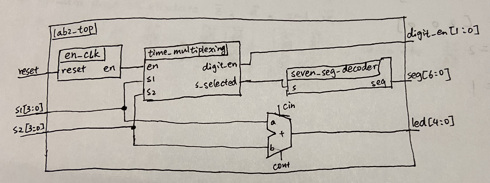
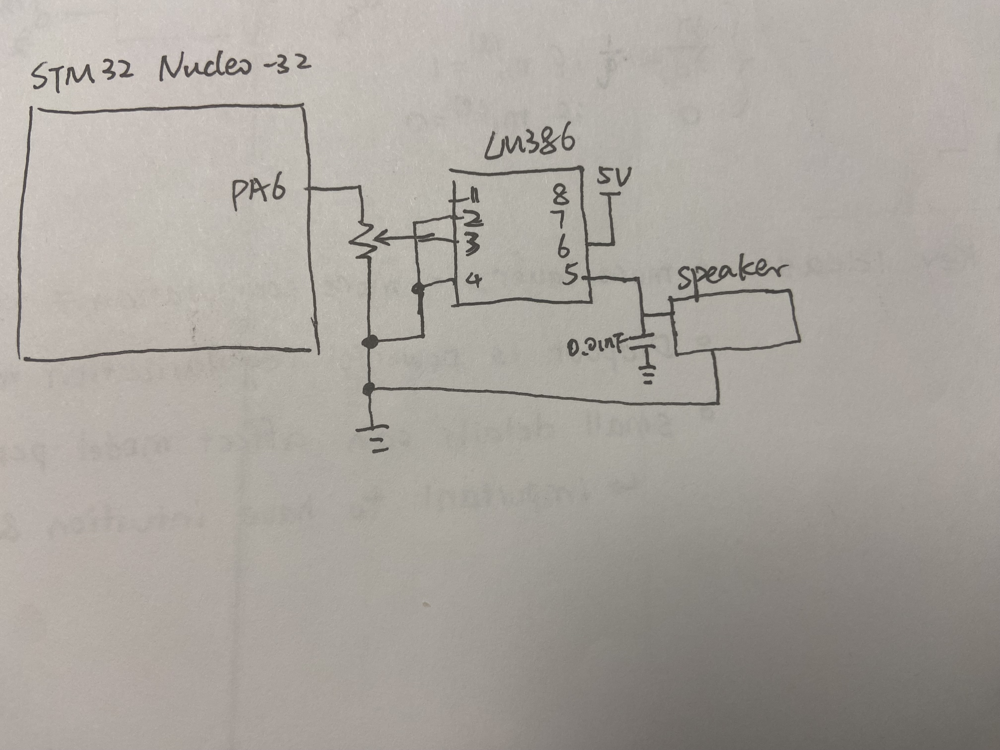

Lab 2: Multiplexed 7-Segment Display
Introduction
The goal of this lab was to implement a time-multiplexing scheme to drive two common anode 7-segment displays using a single set of FPGA I/O pins. The system uses two sets of 4 DIP switches as inputs for each 7-segment display, and the sum of the hexadecimal numbers from the DIP switches is displayed on five LEDs. By employing time-multiplexing, I could efficiently control both digits without requiring a large number of I/O pins, making the design more resource-efficient while achieving the desired functionality.
Design and Testing Methodology
In this lab, the FPGA controlled the 7-segment displays through time-multiplexing, which is a technique that rapidly switches between two displays at a rate fast enough to make the flickering imperceptible to the human eye. The common anodes of the two 7-segment displays were connected to PNP transistors, allowing the FPGA to avoid driving large currents. Each time a segment of the display needs to be lit, the corresponding cathode is driven by the FPGA, while the common anode is switched on for the display currently being activated.
Time-Multiplexing Control
The onboard high-speed oscillator (HSOSC) was used in conjunction with a clock divider to generate an enable signal. This enable signal was responsible for controlling the common anode of each 7-segment display. Only one of the displays is turned on at a time, and the switching between displays occurs at a frequency high enough to prevent visible flickering.
To ensure that the multiplexing rate was fast enough to avoid flickering, the system required an effective switching frequency. Given that I am multiplexing two displays, the switching rate can be calculated based on the target frequency for display updates.
Segment Driving
The seven segments of each display are driven by FPGA pins. A 3.3V supply is used for the anodes of the diodes in the 7-segment displays, and the FPGA sets the cathodes low to turn on each segment. To ensure safe operation and prevent excessive current from flowing through the LEDs, a current-limiting resistor is placed in series with each segment. The resistor value is chosen to allow a current of about 20mA through each segment when it is turned on, which is within the recommended operating range for these types of LEDs.
Hexadecimal Input Conversion
The 4 DIP switches for each display represent a hexadecimal number. The FPGA decodes the hexadecimal input and displays the corresponding digits on the 7-segment displays. A decoder module in the Verilog design converts the hexadecimal values from the DIP switches into the appropriate signals for the segments of the display.
The calculation for determining the correct segment signals involves mapping the hexadecimal digits (0-9 and A-F) to the corresponding segments on the display. Each segment of the 7-segment display is turned on or off according to the binary representation of the hexadecimal digit.
Technical Documentation
The source code for the project can be found in the associated GitHub repository.
Block Diagram
 Figure 1. Block diagram of the Verilog design
The block diagram in Figure 1 demonstrates the overall architecture of the design. The top-level module includes two submodules: 1. Seven Segment Decoder Module (seven_seg_decoder): This module takes the hexadecimal input from the DIP switches and converts it into the appropriate signals to drive the 7-segment display. 2. Time Multiplexing Module (time_multiplexing): This module controls the timing for multiplexing the two displays, ensuring that only one display is activated at a time and that the switching is fast enough to avoid flickering.
Schematic
 Figure 2. Schematic of the physical circuit
Figure 2 shows the physical layout of the design. It illustrates the connections between the FPGA and the two 7-segment displays, as well as the integration of the common anode control using the PNP transistors.
Results and Discussion
Testbench Simulation
 Figure 3. A screenshot of a QuestaSim simulation demonstrating the clock generated for displaying.
Figure 3. A screenshot of a QuestaSim simulation demonstrating the clock generated for displaying.
The simulation results shown in Figure 3 demonstrate the clock signal generated by the time-multiplexing module. This clock signal is used to enable the common anode for each 7-segment display in turn, ensuring that the displays are switched on and off at the correct rate.
 Figure 4. A screenshot of a QuestaSim simulation demonstrating the output displayed on the multiplexed 7-segment display.
Figure 4. A screenshot of a QuestaSim simulation demonstrating the output displayed on the multiplexed 7-segment display.
Figure 4 shows the simulation output for the two multiplexed 7-segment displays. The simulation confirms that the correct segments are lit for each display, and the switching occurs as expected. The output matches the expected result based on the input from the DIP switches, and the system functions correctly with no visible flickering.
Discussion of Results
The results of the simulation and the physical implementation confirm the correctness of the design. The two 7-segment displays successfully show the hexadecimal sum of the DIP switches. The multiplexing works as expected, with the switching rate high enough to prevent any perceptible flickering.
Additionally, the current-limiting resistors ensure that the segments are driven within their safe operating range, providing sufficient brightness without drawing excessive current. The use of PNP transistors for the common anode control prevents the FPGA from having to drive large currents, which helps protect the FPGA pins.
Conclusion
The design successfully implements a time-multiplexed system to drive two 7-segment displays using only seven FPGA I/O pins. The multiplexing scheme, along with the use of PNP transistors to control the common anodes, allows for efficient and effective use of FPGA resources. The system displays the sum of two hexadecimal numbers, as input via the DIP switches, without any visible flickering or blending. The clock divider and time-multiplexing techniques were successfully applied, and the design meets the expected functional requirements. I spent a total of 10 hours working on this lab.